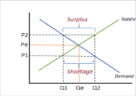
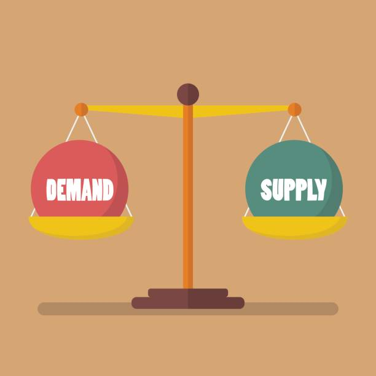

Lesson 4 - Market Equilibrium
- Market Equilibrium (Ekilibriyong Pamilihan)
- - Ang market equilibrium ay ang kalagayan sa pamilihan kung saan magkapantay ang quantity demanded (QD) ng mamimili at quantity supplied (QS) ng nagtitinda sa isang tiyak na presyo. Sa puntong ito, walang labis o kakulangan ng produkto, kaya’t matatag ang presyo sa merkado.


- Presyo ng Ekilibriyo (Equilibrium Price):
- - Ito ang presyong pinagkakasunduan ng mamimili at nagtitinda, kung saan handang bumili ang mamimili at handang magbenta ang nagtitinda ng parehong dami ng produkto.
- Dami ng Ekilibriyo (Equilibrium Quantity):
- - Ito naman ang dami ng produkto na nabibili at naibebenta sa presyong ekilibriyo, na nagpapakita ng balanse sa pamilihan.
- Kawalan ng Ekilibriyo (Disequilibrium):
- - Kapag hindi magkapantay ang QD at QS, nagkakaroon ng imbalance sa merkado. May dalawang uri nito:
- - Sobra o Surplus – Kapag mas mataas ang supply kaysa sa demand, bumababa ang presyo upang mahikayat ang mga mamimili na bumili.
- - Kakulangan o Shortage – Kapag mas mataas ang demand kaysa sa supply, tumataas ang presyo dahil maraming gustong bumili ngunit kulang ang produkto.
- Paggalaw tungo sa Ekilibriyo:
- - Sa isang malayang pamilihan, awtomatikong gagalaw ang presyo pataas o pababa hanggang makamit muli ang ekilibriyo. Ito ay bunga ng interaksyon ng mamimili at nagtitinda.
- - Halimbawa:Kung tumaas ang presyo ng prutas at bumaba ang bilang ng bumibili, babawasan ng mga tindero ang presyo hanggang bumalik sa puntong kung saan handang bumili ang mamimili at magbenta ang tindero ng parehong dami, dito na nabubuo ang ekilibriyo.
< back to the AP home page